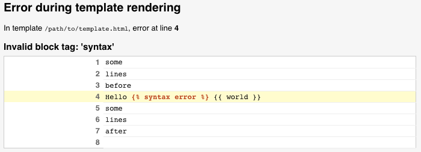

テンプレートのバックエンドをカスタマイズする¶
カスタムのバックエンド¶
ここでは、他のテンプレートシステムを使用するために、カスタムテンプレートバックエンドを実装する方法を説明します。テンプレートバックエンドは django.template.backends.base.BaseEngine を継承したクラスです。このクラスは get_template() と、オプションで from_string() を実装する必要があります。以下は架空の foobar テンプレートライブラリの例です:
from django.template import TemplateDoesNotExist, TemplateSyntaxError
from django.template.backends.base import BaseEngine
from django.template.backends.utils import csrf_input_lazy, csrf_token_lazy
import foobar
class FooBar(BaseEngine):
# Name of the subdirectory containing the templates for this engine
# inside an installed application.
app_dirname = "foobar"
def __init__(self, params):
params = params.copy()
options = params.pop("OPTIONS").copy()
super().__init__(params)
self.engine = foobar.Engine(**options)
def from_string(self, template_code):
try:
return Template(self.engine.from_string(template_code))
except foobar.TemplateCompilationFailed as exc:
raise TemplateSyntaxError(exc.args)
def get_template(self, template_name):
try:
return Template(self.engine.get_template(template_name))
except foobar.TemplateNotFound as exc:
raise TemplateDoesNotExist(exc.args, backend=self)
except foobar.TemplateCompilationFailed as exc:
raise TemplateSyntaxError(exc.args)
class Template:
def __init__(self, template):
self.template = template
def render(self, context=None, request=None):
if context is None:
context = {}
if request is not None:
context["request"] = request
context["csrf_input"] = csrf_input_lazy(request)
context["csrf_token"] = csrf_token_lazy(request)
return self.template.render(context)
詳しい情報は DEP 182 を参照してください。
カスタムエンジンに対するデバッグの統合¶
Django のデバッグページには、テンプレートエラーが発生したときに詳細な情報を提供するフックがあります。カスタムのテンプレートエンジンは、これらのフックを使うことで、ユーザに表示されるトレースバック情報を強化できます。以下のフックが利用できます:
テンプレートの postmortem (事後分析)¶
postmortemは TemplateDoesNotExist が発生したときに表示されます。これは、指定されたテンプレートを見つけようとしたときに使われたテンプレートエンジンとローダの一覧を表示します。例えば、2つの Django エンジンが設定されている場合、 postmortem は以下のように表示されます:

カスタムエンジンは TemplateDoesNotExist を発生させるときに backend と tried 引数を渡すことで postmortem に値を入れることができます。postmortem を使用するバックエンドはテンプレートオブジェクトの origin を指定する 必要があります。
コンテキストの行情報¶
もしテンプレートをパースもしくはレンダリングしてる最中にエラーが発生したら、Djangoはエラーが発生した行を表示することができます。たとえば:
カスタムエンジンはパースやレンダリング中に発生した例外に template_debug 属性を指定することで、この情報を入力できます。この属性は以下の値を持つ dict です:
'name': 例外が発生したテンプレートの名前。'message': 例外メッセージ。'source_lines': 例外が発生した行の前後の行。これは文脈のためのものなので、20行以上にすべきではありません。'line': 例外が発生した行番号。'before': エラーを発生させたトークンの前のエラー行の内容。'during': エラーを発生させたトークン。'after': エラーを発生させたトークンの後のエラー行の内容。'total':source_linesの行数。'top':source_linesが始まる行番号。'bottom':source_linesが終了する行番号。
上記のテンプレートエラーが発生した場合、 template_debug は次のようになります:
{
"name": "/path/to/template.html",
"message": "Invalid block tag: 'syntax'",
"source_lines": [
(1, "some\n"),
(2, "lines\n"),
(3, "before\n"),
(4, "Hello {% syntax error %} {{ world }}\n"),
(5, "some\n"),
(6, "lines\n"),
(7, "after\n"),
(8, ""),
],
"line": 4,
"before": "Hello ",
"during": "{% syntax error %}",
"after": " {{ world }}\n",
"total": 9,
"bottom": 9,
"top": 1,
}
Origin API と サードパーティとの統合¶
Djangoテンプレートでは、template.origin 属性を通じて Origin オブジェクトを利用できます。これにより、template postmortem や、Django Debug Toolbar などのサードパーティライブラリでデバッグ情報を表示できるようになります。
カスタムエンジンは、以下の属性を指定するオブジェクトを作成することで、独自の template.origin 情報を提供できます:
'name': テンプレートへのフルパス。'template_name': テンプレート読み込みメソッドに渡される、テンプレートへの相対パス。'loader_name': テンプレートの読み込みに使われる関数またはクラスを識別するためのオプションの文字列。例:django.template.loaders.filesystem.Loader。
Last update:
1月 22, 2025